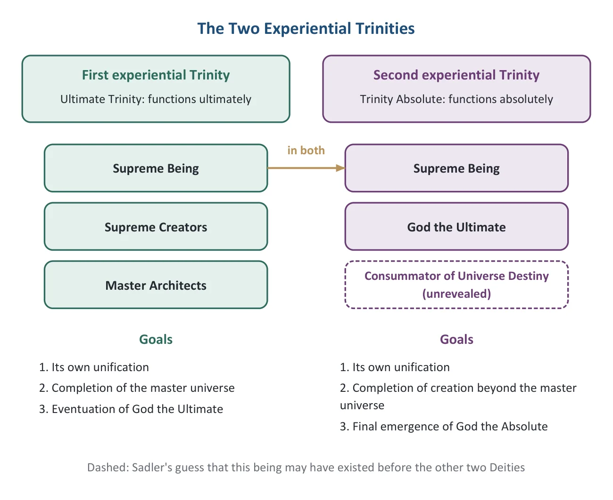

La thèse créatrice finale
Original : L’Histoire finale, chapitre X, La thèse créatrice finale (pp. 95–100)
DANS CE CHAPITRE
Le troisième bloc du récit de Sadler, qu’il nomme l’Histoire finale, s’ouvre là où le deuxième s’est refermé : avec un maitre univers achevé, désormais gouverné expérientiellement par Dieu l’Ultime. Sadler reprend ses quatre critères permettant de reconnaitre un univers nucléaire et raisonne que le maitre univers achevé pourrait être lui-même le troisième et dernier noyau de quelque chose d’encore plus grand. L’Absolu Trinité, qui devient un fait une fois que Dieu l’Ultime a émergé, est la thèse créatrice finale ; sous sa direction, toutes les ressources du maitre univers doivent être mobilisées une fois de plus, et l’Aventure Absolue commence. Tel est, dans les grandes lignes, l’argument de ce chapitre.
1. Une histoire que l’on peut commencer mais non achever (orig., p. 95)
Sadler a divisé l’histoire du maitre univers en trois histoires. L’Histoire finie se termine avec l’émergence de Dieu le Suprême ; l’Histoire absonite se termine avec l’émergence de Dieu l’Ultime ; et vient maintenant l’Histoire finale. Chacune des deux premières avait un commencement et une fin. La troisième est différente, et Sadler admet d’emblée qu’il peut l’ouvrir mais non la mener à son terme.
Le point de départ est le maitre univers ancré depuis Havona jusqu’au niveau d’espace quaternaire et gouverné expérientiellement par Dieu l’Ultime. L’architecture reprend celle de l’Histoire finie : une thèse créatrice finale, le commencement d’une antithèse finale et une « synthèse impossible », chacune dans son propre chapitre.
Sadler avertit d’avance que cette histoire se terminera dans le suspense et la perplexité. Les pouvoirs et agents de la création expérientielle, ayant épuisé toutes les possibilités de croissance aux niveaux fini et absonite, se trouvent désemparés devant la croissance sans limites des niveaux absolus. Il nomme cela le dernier défi de tous, le défi de l’infinité.
Comment lire l’Histoire finale
Le Livre d’Urantia dit très peu de choses sur ce qui se trouve au-delà du maitre univers. Ce qu’il énonce clairement, c’est la composition de l’Absolu Trinité, une indication que sa fonction s’étendra au-delà du maitre univers, et une perspective prudente sur l’apparition expérientielle de Dieu l’Absolu. Tout le reste est l’application par Sadler des règles de ses deux premières histoires à la troisième ; ici plus que partout ailleurs, le lecteur doit donc soigneusement distinguer le texte révélé de la conjecture.
2. Le maitre univers en tant que troisième univers nucléaire (orig., pp. 96–97)
Le maitre univers est-il une fin en soi ?
L’achèvement du maitre univers est un but immensément lointain. Mais est-il le but final ? Sadler pose la question : cette vaste création pourrait-elle être, en vérité, un noyau, le centre de quelque chose de plus grand ? Des univers cytoplasmiques pourraient-ils un jour prendre forme au-delà de la lisière la plus lointaine du niveau d’espace quaternaire ?
Jusqu’ici, Sadler a examiné deux univers nucléaires (chapitre 8). Havona sert de noyau au grand univers, qui sert à son tour de noyau au maitre univers. Il propose maintenant une troisième possibilité : le maitre univers tout entier pourrait être le troisième et dernier noyau.
Les quatre critères appliqués de nouveau
Sadler utilise quatre critères pour identifier un univers nucléaire. Un noyau diffère par nature de la création cytoplasmique qui l’entoure. Lorsqu’un noyau est achevé, une nouvelle Déité apparait. Lorsqu’un noyau est achevé, une nouvelle Trinité devient factuelle. Et un noyau transmet son propre caractère à la création extérieure par l’intermédiaire de cette nouvelle Trinité et des créateurs et administrateurs qui travaillent avec elle. Appliquées tour à tour à Havona, au grand univers et au maitre univers, ces quatre mesures donnent le tableau suivant.
| Critère | Havona | Grand univers | Maitre univers |
|---|---|---|---|
| Nature distinctive | La seule création existentielle et éternelle | La scène sur laquelle l’Être Suprême a évolué | La scène sur laquelle l’Ultimité a grandi et s’est extériorisée |
| Apparition d’une nouvelle Déité | L’Esprit Infini | L’Être Suprême | Dieu l’Ultime |
| Nouvelle Trinité | La Trinité du Paradis | La première Trinité expérientielle | La deuxième Trinité expérientielle |
| Canal de transmission vers l’extérieur | Dieu le Septuple et les ordres de ministère | La première Trinité expérientielle avec ses créateurs associés | Le maitre univers tout entier, mobilisé par la deuxième Trinité expérientielle |
La logique du premier critère est simple. Toute création qui suivra le maitre univers portera une empreinte post-ultime et ne pourra donc pas lui ressembler. Sous le quatrième critère, Sadler s’attend à ce que la deuxième Trinité expérientielle transmette les significations-valeurs expérimentées aux niveaux fini et absonite aux créations futures situées au-delà.

De cette comparaison, Sadler conclut que le maitre univers n’est pas un produit final achevé, mais une création nucléaire de plus. Comme les ondes qui s’étendent cercle après cercle à partir d’une pierre jetée dans un étang, chaque noyau achevé a ouvert autour de lui un domaine plus vaste, et le maitre univers, lui aussi, ressemble au noyau d’un domaine encore plus grand situé hors de lui. Le Livre d’Urantia va dans la même direction.
…mais nos concepts concernant la pleine fonction de cette deuxième Trinité expérientielle paraissent impliquer quelque chose qui déborde même le domaine immensément étendu du maitre univers.106:6.2
3. L’Absolu Trinité : la thèse créatrice finale (orig., pp. 98–100)
Le dernier défi de Dieu
L’achèvement du troisième univers nucléaire et la factualisation de la deuxième Trinité expérientielle sont, pour Sadler, la troisième et dernière thèse créatrice, le dernier défi que Dieu place devant toute création. Ce qui rend ce défi réel est une nouvelle Trinité qui ne peut prendre forme que lorsque Dieu l’Ultime est entré dans le champ d’action, à savoir l’Absolu Trinité.
Celle-ci est l’Absolu Trinité, l’union de Dieu le Suprême, de Dieu l’Ultime et du Consommateur non révélé de la Destinée de l’Univers.106:5.1
Cette Trinité rassemble en elle-même la somme de tous les accomplissements expérientiels dans l’ensemble du maitre univers, et à cette somme s’ajoute un facteur imprévisible : la présence du Consommateur de la Destinée de l’Univers. Sadler réévalue les trois membres un à un.
L’Être Suprême : une Déité dans les deux Trinités
L’Être Suprême appartient aux deux Trinités expérientielles, mais Sadler soutient que ces deux appartenances se situent à des niveaux différents. Lorsque le deuxième âge touche à sa fin, le Suprême parachève la synthèse pouvoir-personnalité de tout le fini et devient une Déité avec laquelle les créatures peuvent prendre contact. C’est en tant que Déité de tout le fini que le Suprême prend part à la première Trinité expérientielle.
À la fin du sixième âge, pense Sadler, l’Être Suprême sera bien plus grand que cela. Au cours des âges de l’espace extérieur, il aura partagé les travaux unificateurs de la Trinité Ultime et les affaires des univers extérieurs, grandissant aussi au niveau absonite. S’il en est ainsi, le Suprême de la première Trinité expérientielle est post-fini, tandis que le Suprême de la deuxième est post-ultime.
Dieu l’Ultime : la synthèse de tout l’absonite
L’extériorisation parachevée de l’Ultimité signifie que Dieu l’Ultime a rassemblé dans son propre être tout ce que le maitre univers en est venu à signifier et à valoir dans l’expérience. À cela, ajoute Sadler, se joignent les valeurs absonites originelles reçues d’abord de la Trinité du Paradis. De même que la Suprématie achève sa croissance à l’égard de tout le fini, de même l’Ultimité achève sa croissance à l’égard de tout l’absonite. L’extériorisation finale de l’Ultime est donc le signe que les possibilités de croissance absonite ultérieure sont épuisées.
Le raisonnement de Sadler : le post-ultime ne peut être subabsolu
Sadler soutient que tout ce qui a dépassé le niveau ultime ne peut plus rester subabsolu ; en un certain sens, il doit être absolu (la discussion plus complète se trouve dans l’annexe XIX). Selon cette logique, le Suprême et l’Ultime sont tous deux des Déités post-ultimes au sein de la deuxième Trinité expérientielle, et il devient naturel d’appeler cette Trinité « absolue ». Comme l’affirmation selon laquelle le Suprême grandit aussi au niveau absonite, c’est une interprétation de Sadler, non une chose que le Livre d’Urantia lui-même affirme.
Le Consommateur de la Destinée de l’Univers
Le troisième membre est l’être le plus mystérieux mentionné dans le Livre d’Urantia. En dehors d’un lien avec la consommation de la destinée, on ne sait presque rien de lui.
…la destinée est probablement consommée par l’acte du Consommateur de la Destinée de l’Univers, et cet acte fait probablement intervenir le Suprême et l’Ultime, dans l’Absolu Trinité.106:7.3
Sadler propose une comparaison prudente. De même que les Architectes du Maitre Univers existaient avant les deux autres membres de la première Trinité expérientielle, le Consommateur a peut-être existé avant le Suprême et l’Ultime. Ce que cet être pourrait apporter à la destinée, cependant, Sadler se refuse même à le deviner, et cette retenue est elle-même une marque d’honnêteté.
La Trinité Ultime, évoluant présentement, sera finalement constituée de l’Être Suprême, des Personnalités Créatrices Suprêmes et des Architectes absonites du Maitre Univers…0:12.6
Pourquoi « absolue » ?
Sadler trouve la raison de ce nom dans deux faits : les membres sont au moins des êtres post-ultimes, et le champ de leur fonction semble embrasser tout le maitre univers et s’étendre dans l’espace qui le dépasse. Là où la première Trinité expérientielle fonctionne ultimement, la deuxième fonctionne absolument. Le texte, lui aussi, admet que cette Trinité se prête mal à une classification facile.
Nous sommes toutefois certains de ceci : la Trinité du Paradis existentielle est infinie et l’Ultime Trinité expérientielle est subinfinie, mais l’Absolu Trinité n’est pas aussi facile à classifier.106:6.5
Sadler met côte à côte les buts des deux Trinités expérientielles et trouve qu’ils partagent un même modèle. La première cherchait à s’unifier, à rendre parfait le maitre univers et à réaliser l’extériorisation de Dieu l’Ultime. La seconde cherche à s’unifier, à rendre parfaites les créations situées hors du maitre univers, et enfin à faire apparaitre Dieu l’Absolu. Parce que ces derniers buts semblent n’avoir aucune limite, ils seront extrêmement difficiles à atteindre. Même ainsi, l’Absolu Trinité est le fruit d’un maitre univers pleinement achevé et le dernier défi placé devant les citoyens de l’âge post-ultime.

4. La dernière mobilisation (orig., p. 100)
Que les ressources du maitre univers tout entier soient mobilisées en une seule fois dépasse l’imagination. Sadler croit néanmoins que, sous la direction de l’Absolu Trinité, cela se produira surement, et il fonde cette conviction sur les deux mobilisations qui ont précédé.
La première a eu lieu à l’aube du temps. Les citoyens de la création parfaite de l’éternité, mis au défi par l’ouverture des superunivers imparfaits, sont partis vers le niveau d’espace des superunivers ; ce fut l’Aventure Suprême du deuxième âge. La deuxième est venue après le commencement du troisième âge de l’univers, lorsque la Trinité Ultime a rassemblé toutes les ressources du grand univers et s’est avancée dans l’espace extérieur ; Sadler l’appelle l’Aventure Ultime. La troisième mobilisation rassemble toutes les ressources du maitre univers, Havona et les quatre niveaux extérieurs compris, et Sadler s’attend à ce que ce grand rassemblement annonce l’Aventure Absolue.
Le Livre d’Urantia décrit ce qui mettra en mouvement la deuxième mobilisation : les citoyens devenus parfaits des superunivers pourront se reposer un moment, mais pas pour longtemps.
Certainement, surement et inexorablement, l’énigme de la Déité émergente de Dieu l’Ultime mettra au défi les citoyens devenus parfaits des univers établis, exactement comme leurs ancêtres évolutionnaires, qui se débattaient, furent jadis mis au défi par la recherche de Dieu le Suprême.117:7.17
Sadler et le texte : les noms des aventures
« Aventure suprême » est une expression que le texte lui-même emploie plus d’une fois [1:0.6]. Sadler écrit que le texte appelle la deuxième mobilisation l’« Aventure Ultime », mais cette expression exacte ne se trouve pas dans le Livre d’Urantia. Le texte décrit plutôt le spectacle de « l’attirante recherche absonite » [117:7.17]. « Aventure Absolue » n’est pas non plus une expression du texte ; Sadler l’a forgée pour faire pendant aux deux noms précédents.
Les trois mobilisations répètent un même modèle. Les citoyens d’un noyau achevé reçoivent de Dieu un nouveau défi et partent, avec tout ce qu’ils possèdent, vers un domaine extérieur plus vaste.
Points clés
- L’Histoire finale part du maitre univers achevé, et Sadler lui-même dit que c’est une histoire qu’il peut commencer mais non achever.
- L’application des quatre critères d’un univers nucléaire (nature distinctive, nouvelle Déité, nouvelle Trinité, transmission vers l’extérieur) fait apparaitre le maitre univers comme le troisième et dernier noyau.
- L’Absolu Trinité se compose de Dieu le Suprême, de Dieu l’Ultime et du Consommateur de la Destinée de l’Univers ; Sadler y voit la thèse créatrice finale de Dieu.
- Sadler en déduit que le Suprême grandit aussi au niveau absonite et rejoint donc la deuxième Trinité en tant que Déité post-ultime.
- La première Trinité visait à rendre parfait le maitre univers et à faire apparaitre Dieu l’Ultime ; la seconde vise à rendre parfait ce qui se trouve au-delà et à faire apparaitre Dieu l’Absolu.
- Après l’Aventure Suprême et l’Aventure Ultime, Sadler prévoit une dernière mobilisation de tout le maitre univers qui ouvrira l’Aventure Absolue.